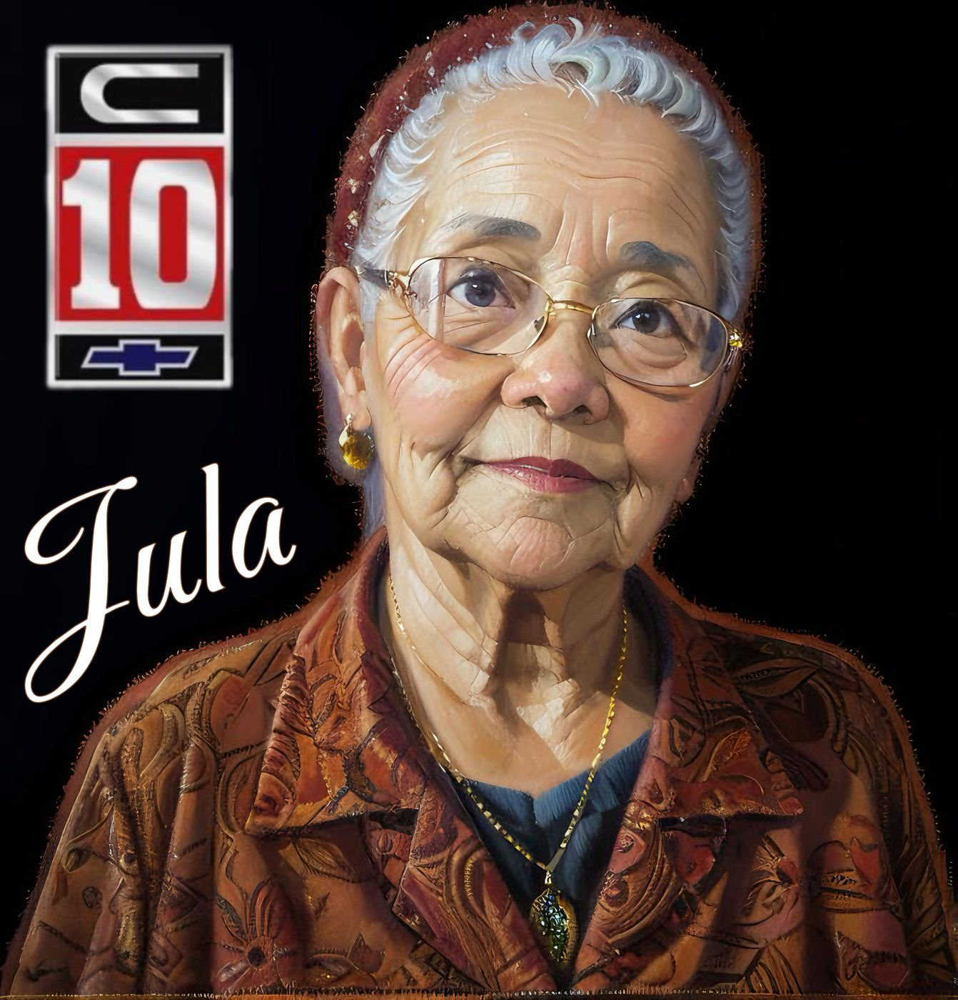
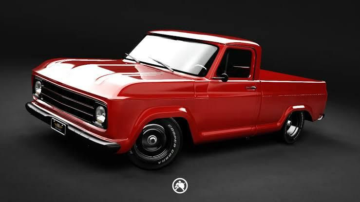
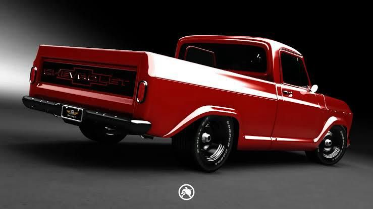
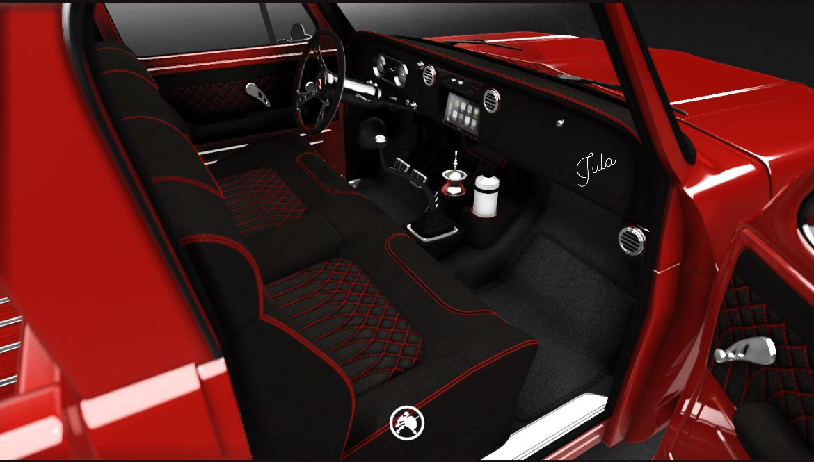
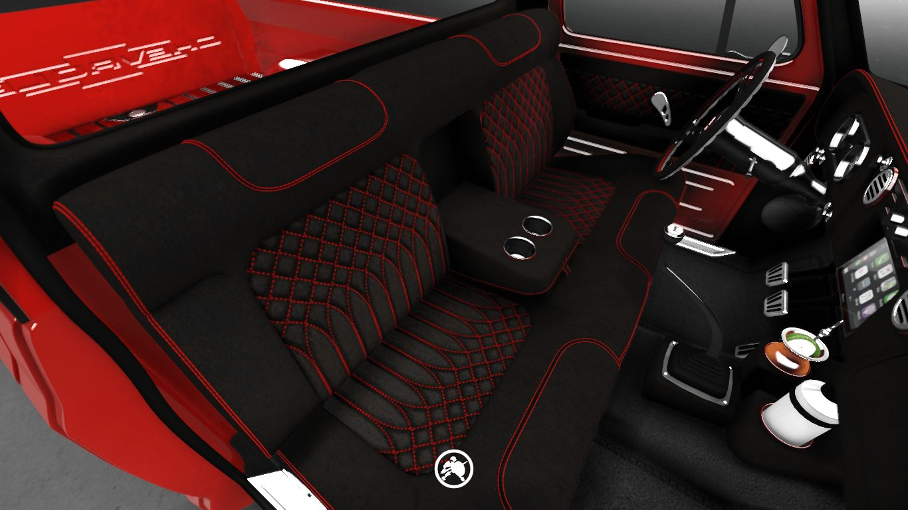
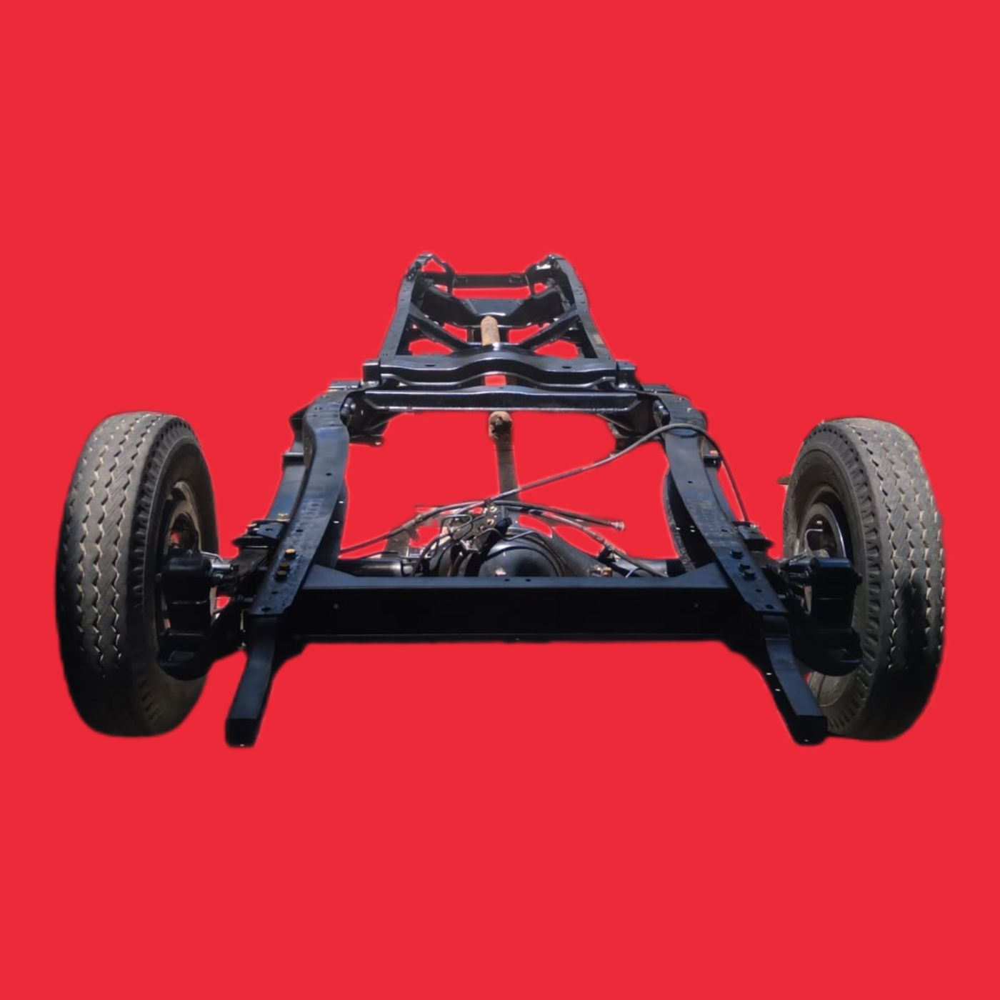
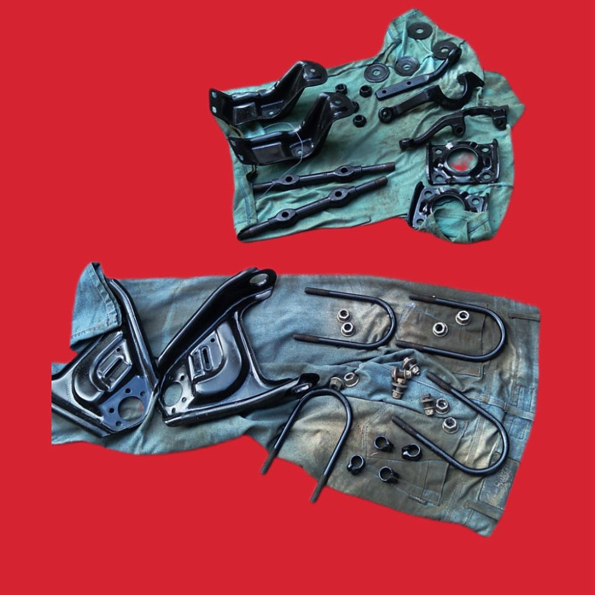
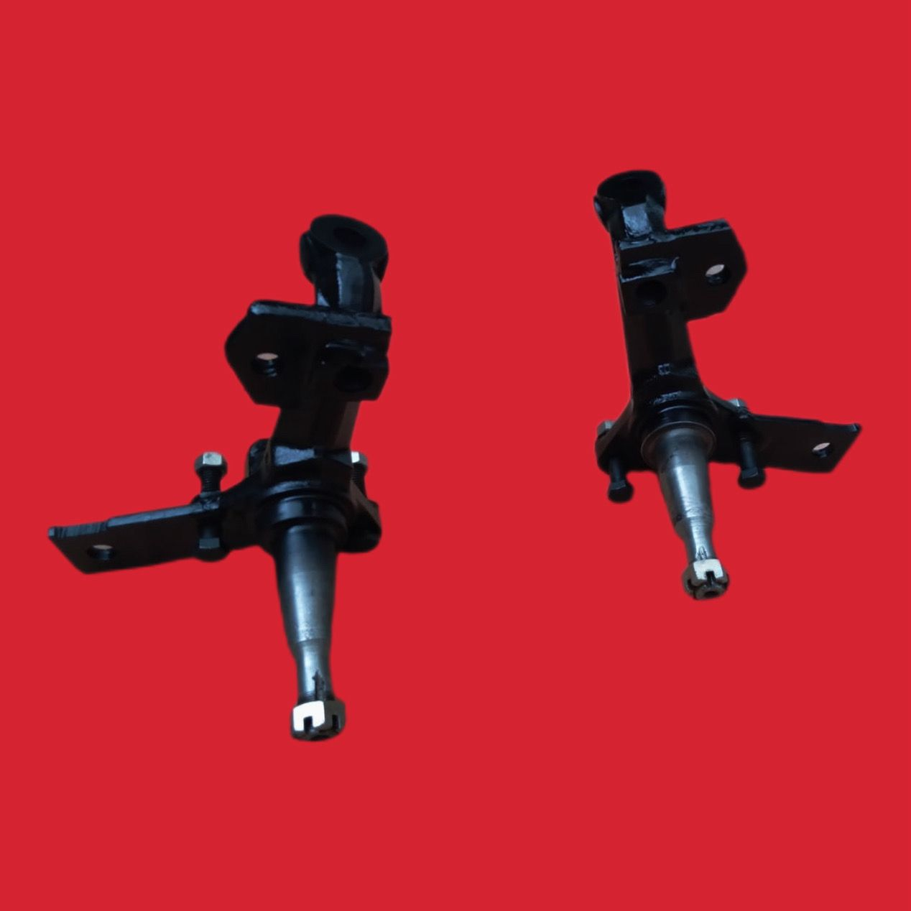
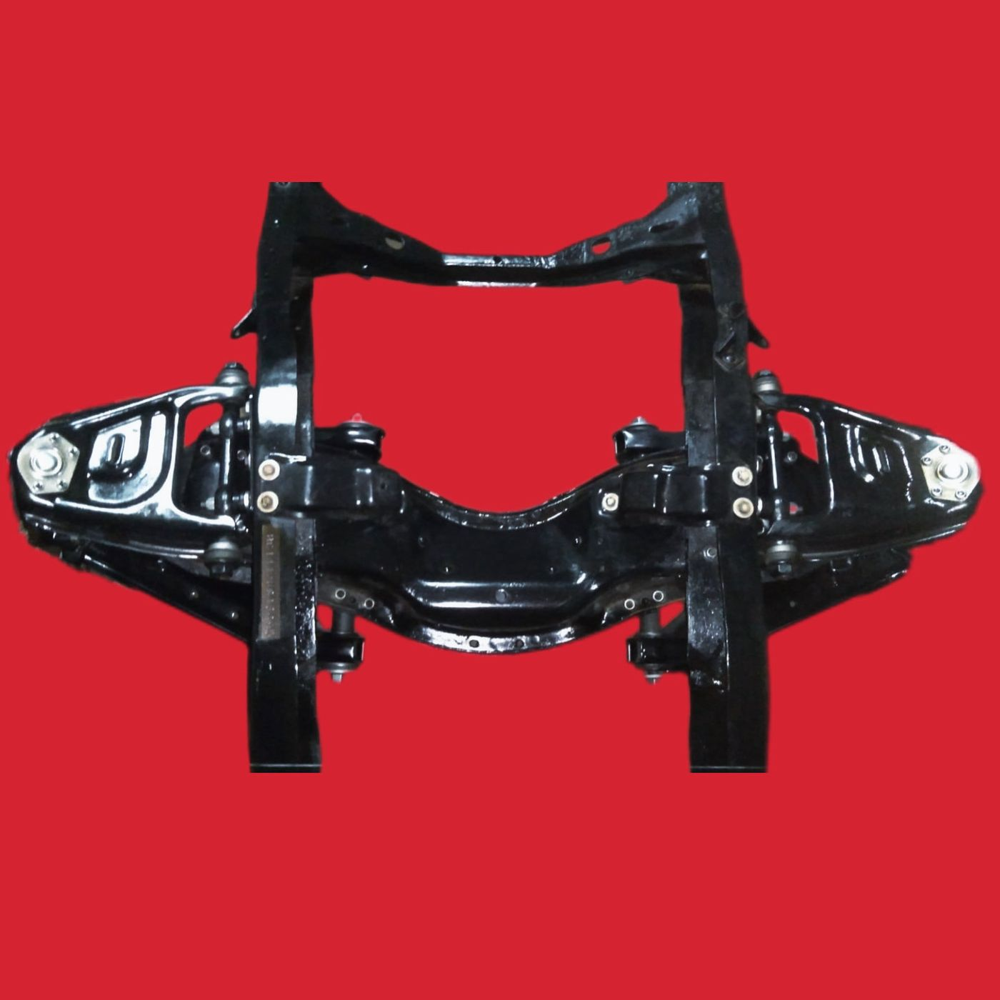

Da faísca à roda.
Role a página devagar. A C10 se abre e mostra como a força nasce no motor, passa pela caixa de marcha e chega ao chão pelo diferencial.
Cada número mostra de onde veio: Ficha do projeto Catálogo Calculado A confirmar

Da ferrugem ao vermelho: a verdadeira essência do automobilismo raiz.

Para o vovô Antônio Ribeiro da Silva, a Chevrolet C10 1977 era mais que um meio de transporte. Era uma extensão do corpo dele. Servia para trabalhar, para levar a família e para os passeios nas estradas de terra do interior da Bahia. A C10 sempre esteve lá, testemunha de muitas memórias.
Quando ela finalmente parou de rodar, ninguém imaginava o quanto significava. Até a decisão de trazê-la de volta à vida. Foi aí que a restauração virou algo maior: um reencontro com as raízes e uma forma de manter viva a memória dos avós.
O projeto ganhou o nome de Jula em homenagem à vovó Julieta. Forte e presente, ela conduzia a vida com a mesma firmeza com que a caminhonete enfrentava as estradas difíceis.
Era madrugada de sábado, ainda escuro lá fora, e o som inconfundível da C10 começava a ecoar pela casa. Meu tio Juarez estava pronto para mais uma viagem à feira de Santo Estêvão.
A viagem não passava de 30 quilômetros, mas cada quilômetro parecia um capítulo. A cada fazenda, mais um passageiro: um casal com uma cabra, outro com cestas de queijo e bolo. Para mim, a parte mais especial não era o destino. Era a companhia.
Do livro Projeto Jula The Truck, de Bruno Azevedo
A ideia sempre foi preservar a autenticidade da C10, mas com melhorias onde elas importam: chassi, freios, suspensão, transmissão e diferencial. O visual foi planejado em 3D antes da primeira lixa, do vermelho da lataria ao bordado dos bancos.




Projeto visual: Eder H. Martins, ToyPic Art




A Série 10 da Chevrolet foi fabricada no Brasil de 1964 a 1997, com design desenvolvido aqui. Em 1974 a C-10 substituiu a C-14 e foi uma das primeiras picapes brasileiras com suspensão dianteira independente, o que a deixou mais confortável no dia a dia e mais estável na terra.
Role a página devagar. A C10 se abre e mostra como a força nasce no motor, passa pela caixa de marcha e chega ao chão pelo diferencial.
Cada número mostra de onde veio: Ficha do projeto Catálogo Calculado A confirmar
A explosão empurra o pistão e o virabrequim gira. A embreagem passa esse giro para a caixa, o cardã leva até o diferencial e o diferencial divide a força entre as duas rodas de trás.
O cabeçote sobe e mostra o que fica escondido. Role a página para girar o virabrequim: cada cilindro acende na hora em que dispara.
São três marchas e a ré, no H gravado na bola da alavanca. Na 1ª, uma engrenagem pequena gira uma grande: pouca velocidade e muita força para tirar a C10 do lugar. Na 2ª e na 3ª, a troca se inverte e a velocidade cresce. Ao lado do câmbio ficam o freio de mão e a trava do diferencial.
Na curva, o diferencial deixa cada roda girar no seu ritmo. Na lama, isso vira problema: a força escapa pela roda que patina e a outra fica parada. A trava junta as duas rodas.
Aberto: a roda na lama gira em dobro e a do chão firme fica parada. A C10 não sai.
Na frente, a pinça aperta as pastilhas contra o disco. Atrás, as sapatas abrem por dentro do tambor. O freio de mão, ao lado do câmbio, puxa um cabo que abre só as sapatas de trás.
Rodando. Toque em Frear ou puxe o freio de mão.
Chassi, freios, suspensão, transmissão e diferencial foram melhorados sem tirar a alma da C10.
Ver a restauraçãoUma C10 1977 parada na garagem, pouco dinheiro no bolso e o Seu Zito de olho em cada peça. A restauração é com você.
Roda direto no navegador do celular. Para instalar, abra no Safari (iPhone) ou no Chrome (Android) e adicione à tela de início.

Fotos tiradas no meio do trabalho, sem pose, com o celular na mão suja. Elas mostram o que quase nunca aparece no resultado final: chapa podre, madrugadas de lixa, dedo machucado e, no fim, a cor. Toque numa foto para ampliar.
O Projeto Jula também virou música. As faixas foram criadas com quem participou da restauração, e cada apoiador ganhou uma canção em sua homenagem. A faixa tema, “O legado vai viver”, conta a jornada inteira.
Ouvir no AudiusJula é o nome, uma homenagem de amor,
A C10 77 que o tempo marcou.
Com a família unida, o legado vai viver.Refrão de “O legado vai viver”
A Julacoin é a criptomoeda do Projeto Jula. Ela está no Moonshot, para quem quer levar a Jula também na carteira.
Criptomoedas são voláteis e você pode perder o valor aplicado. Isto não é recomendação de investimento.
Com a família unida, o legado vai viver.